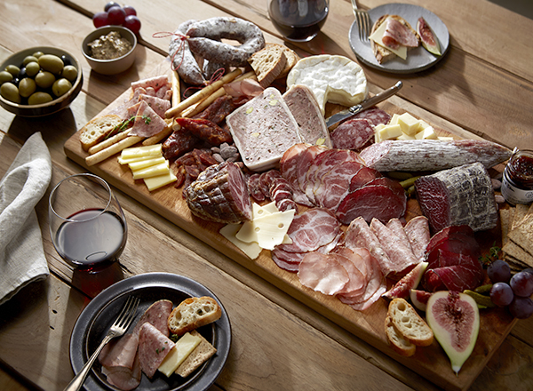
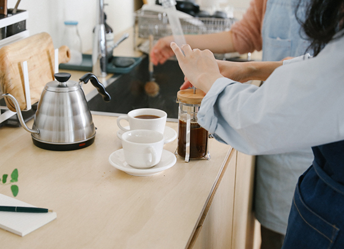
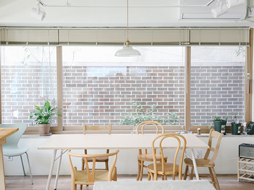
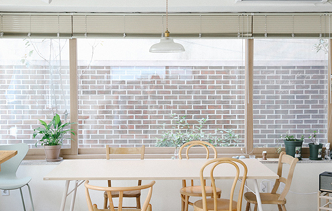
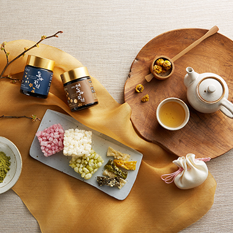
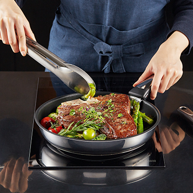
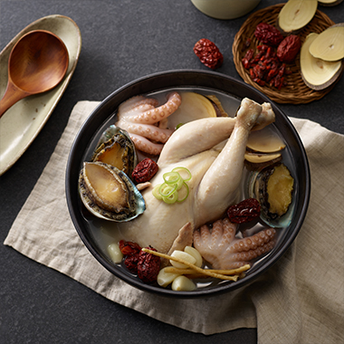
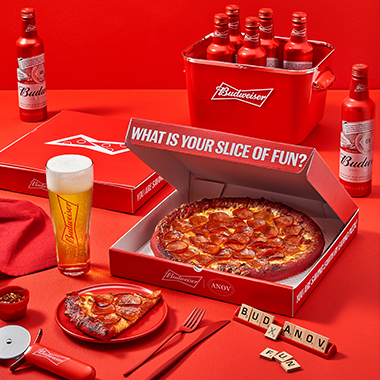
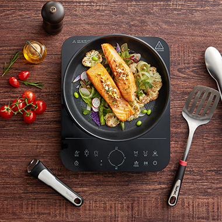

-

ABOUT
OUR TASTE는 푸드 스타일리스트 강소원이 2018년 런칭한
MORE VIEW
푸드 커뮤니케이션 브랜드입니다.
2020년 아우어 테이스트의 취향을 담은 키친 스튜디오,
OUR TASTE YN을 연남동에 오픈했습니다.
줄여서 OYN(오와이엔)으로 부릅니다.
아우어 테이스트는 여러분과 함께 무럭무럭 성장하고있습니다. -

OYN Kitchen studio
OYN은 푸드 스타일리스트 강소원이 만든 브랜드 ‘OUR TASTE’의 키친 스튜디오입니다.
MORE VIEW
연남동에 위치한 OYN은 커다란 창으로 햇살이 들어와 요리할 때 나도 모르게 허밍을 하게 되는 기분 좋은 장소입니다.


OYN Kitchen studio Rental
렌탈 예약 문의 안내OYN은 100% 예약제로 운영되고 있습니다.
단순하게, 당신과 함께, 취향을 공유합니다.
예약 문의주세요.
PORTFOLIO
OUR TASTE food styling works-

-

-

-

-

OYN YOUTUBE
CONTACT
- OUR TASTE YN
- 서울특별시 마포구 성미산로19길 111, 1층
[아우어 테이스트 연남]
- 대중교통
- 2호선 홍대입구역에서 마을버스 마포 06번 이용, 사천고가 앞 하차
경의중앙선 가좌역에서 도보 7분
- 산책길
- 연트럴 파크를 통해 오시면
자연과 계절을 즐기실 수 있습니다.
공원 끝에서 도보로 3분 거리에 있습니다.
예약시 알려주세요.

 OUR TASTE
OUR TASTE

 OYN
OYN

 Youtube
Youtube